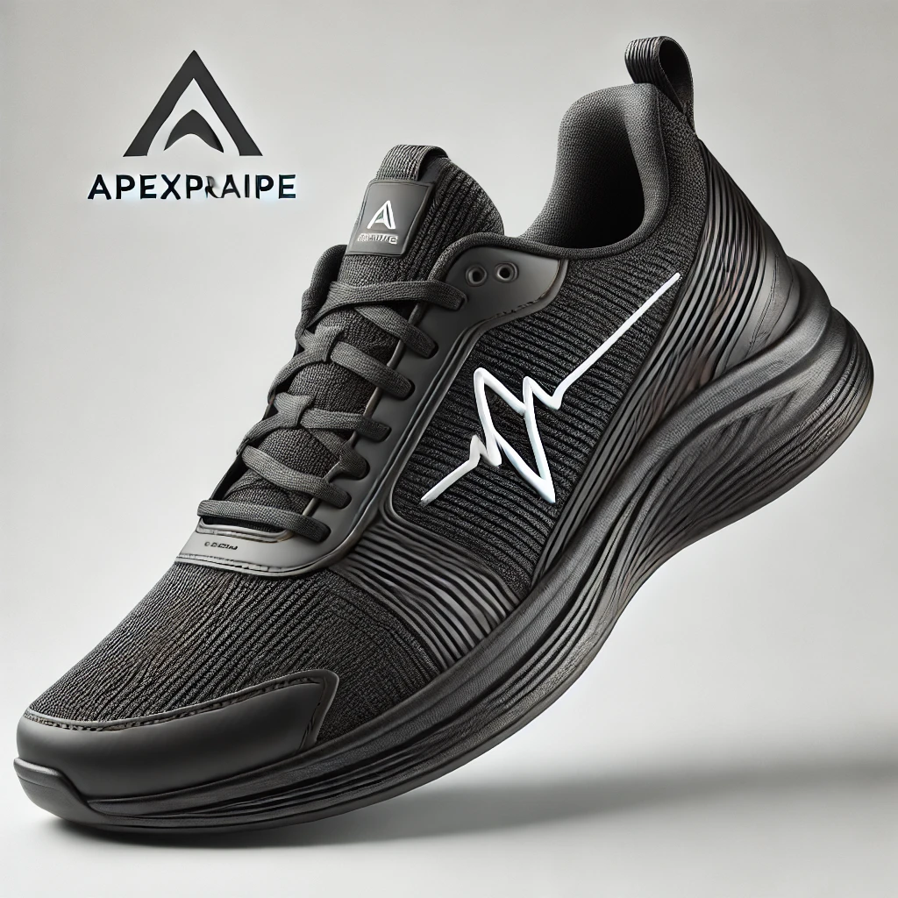

Especificações do Tênis ApexPraipe
Voltar

Tênis ApexPrime - Versão Branca
- Cor: Branco
- Material Superior: Malha respirável de poliéster
- Forro: Espuma macia
- Palmilha: Anatômica em EVA
- Solado: Borracha antiderrapante
- Logo: Linha de frequencímetro na lateral
- Estilo: Moderno e minimalista
- Tamanhos disponíveis: 36 a 44
- Peso: 300g (tamanho 40)
Tênis ApexPrime - Versão Preta

- Cor: Preto
- Material Superior: Couro sintético resistente à água
- Forro: Tecido de poliéster antibacteriano
- Palmilha: Gel com amortecimento
- Solado: Borracha de alta resistência
- Logo: Linha de frequencímetro na lateral
- Estilo: Elegante e contemporâneo
- Tamanhos disponíveis: 36 a 44
- Peso: 320g (tamanho 40)